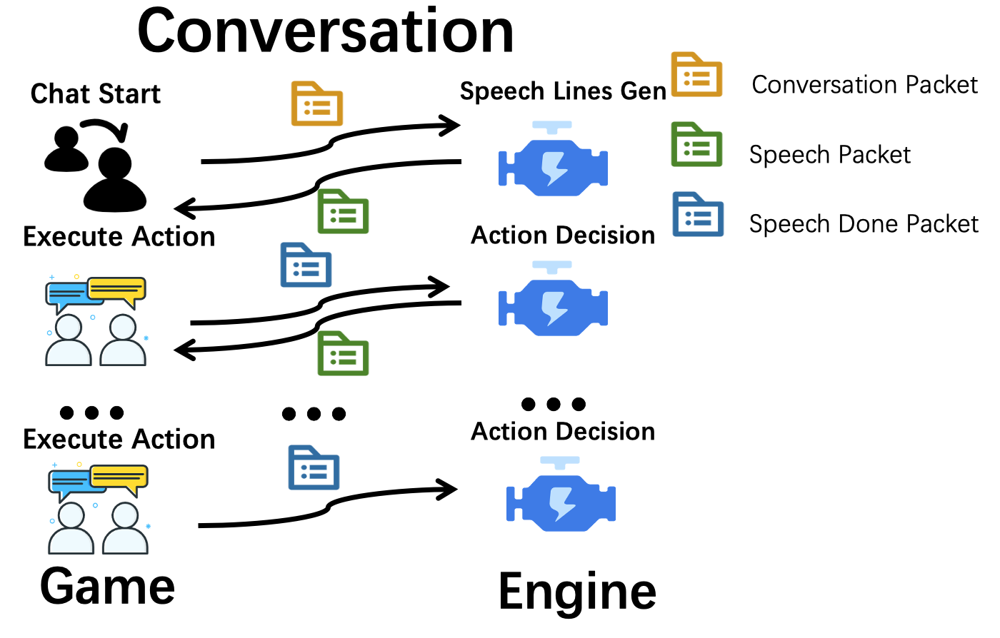

Conversation模块简述

游戏需要自己确认npc的群体对话触发机制，通常是一个包含固定半径的对话房间。 发送create_conversation给engine后，engine会根据提供的参数返回对话剧本 游戏端通过设置stream参数来控制对话剧本生成的模式： 其一是生成完整剧本，将整个剧本打包成大数据包并一次性传给游戏端（stream = False） 其二是生成流式剧本、每行剧本打包成一个数据包并持续传送给游戏端（stream = True） 对话剧本的每一行在游戏端演出完成后，需要发送确认包给engine。
对话剧本允许插话，玩家如果要插入对话或者一个新的npc进入了对话，这时候发送re_create_conversation包(带着之前的对话ID)便可，会重新生成一个考虑到插入npc的接续剧本。
Conversation模块UDP包
# create_conversation游戏端发给引擎的包
{
"func": "create_conversation",
"npc": ["王大妈","李大爷"], # npc列表
"scenario_name": "李大爷家",
"location": "李大爷家卧室",
"topic": "王大妈想要切了自己的西瓜给李大爷吃，并收钱", # 可以留空，会自动生成topic
"npc_states": [ # 该列表中的每个状态对应于npc列表的相应角色名称
{
"position": "李大爷家",
"observation": {
"people": ["李大爷", "村长", "隐形李飞飞"],
"items": ["椅子#1","椅子#2","椅子#3[李大爷占用]","床"],
"locations": ["李大爷家大门","李大爷家后门","李大爷家院子"]
},
"backpack":["优质西瓜", "大砍刀", "黄金首饰"]
},
{
"position": "李大爷家",
"observation": {
"people": ["王大妈", "村长", "隐形李飞飞"],
"items": ["椅子#1","椅子#2","椅子#3[李大爷占用]","床"],
"locations": ["李大爷家大门","李大爷家后门","李大爷家院子"]
},
"backpack":["黄瓜", "1000元", "老报纸"]
},
],
"starting": "你好，嫩们在干啥腻？", # 玩家说的话，可选留空
"player_desc": "玩家是一个疯狂的冒险者，喜欢吃圆圆的东西", # 玩家的描述，可选留空
"memory_k": 3, # npc的记忆检索条数，必须填写
"length": "P" # 可以选择的剧本长度模式，S M L X P 可选，分别是短剧本、中剧本、长剧本、超长剧本、精简剧本（短≠精简）
"stream": True # 是否采用流式响应
}
# 引擎端生成完整剧本传给游戏端的数据包
{
"name": "conversation",
"mode": "script", # 对话传输剧本模式的数据包
"id": "123456789", # conversation对象的索引号
"location": "李大爷家", # 对话发生所在的地点
"lines": [line1, line2, line3, line4, ...] # 剧本信息，由若干行对话组成的序列
}
# 引擎端生成流式剧本传给游戏端的单个数据包
{
"name": "conversation",
"mode": "line", # 对话传输剧本行模式的数据包
"id": "123456789", # conversation对象的索引号
"location": "李大爷家", # 对话发生所在的地点
"index": 2, # 剧本行所在的索引号
"one_line": line # 一行剧本的信息
}
# 引擎端生成剧本的每一行的格式
{
"type": "Interaction", # 剧本行的类型，可以是State，Interaction，Error
"state": "李大爷退出。剩下的角色：王大妈", # 当剧本行类型是State和Error时，"state"才会有具体内容
"name": "李大爷", # 剧本行对应的角色姓名，当剧本行类型是Interaction时才不为空
"mood": "开心", # 剧本行对应角色的情绪，当剧本行类型是Interaction时才不为空
"words": "我喜好吃西瓜", # 剧本行对应角色的说话内容，当剧本行类型是Interaction时才不为空
"action": {
"type": "对话",
"args": "王大妈"} # 剧本行对应角色的动作，当剧本行类型是Interaction时不为空
}
# 游戏端传给引擎端的剧本演示确认包
{
"func": "confirm_conversation_line",
"conversation_id": "123456789", # conversation对象的索引号
"index": 2, # 游戏端展示完成的剧本行索引号
}
# re_create_conversation游戏端发给引擎的包
{
"func": "re_create_conversation",
"id": "123456789", # conversation对象的索引号
"character": "警长", # 新加入角色的名称
"interruption": "大家好呀，你们刚刚在说什么", # 玩家插入的说话内容
"player_desc": "玩家是一个疯狂的冒险者，喜欢吃圆圆的东西", # 玩家的描述，可选留空
"length": "P" # 可以选择的剧本长度模式，S M L X P 可选，分别是短剧本、中剧本、长剧本、超长剧本、精简剧本（短≠精简）
"stream": True # 是否采用流式响应
}